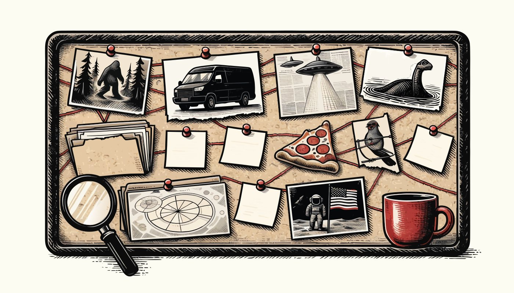

CASE 004

UFO sightings
Lights that outran the caption. The public record is full of sightings and short on confirmed visitors.
Suspicion meter
55% — Plenty of lights. Thin paperwork.
Evidence
- On June 24, 1947, pilot Kenneth Arnold reported nine objects near Mount Rainier. He compared their motion to a saucer skipping on water, and “flying saucer” stuck.
- U.S. agencies now say UAP: unidentified anomalous phenomena. The 2021 ODNI preliminary assessment and NASA’s 2023 study did not confirm extraterrestrial craft.
- Most reported lights have ordinary explanations: aircraft, planets, balloons, and cameras.
The public record, lightly
- Mount Rainier and the 1947 date are a matter of public record.
- The ODNI and NASA reports are posted by those agencies.
How to use this at your party
Dim the lights, hand out the free UFO coloring page, and let each guest log one “sighting” of the snack table.
Free UFO coloring page · UFO Sighting Journal, $12.99 · kit, $11.99